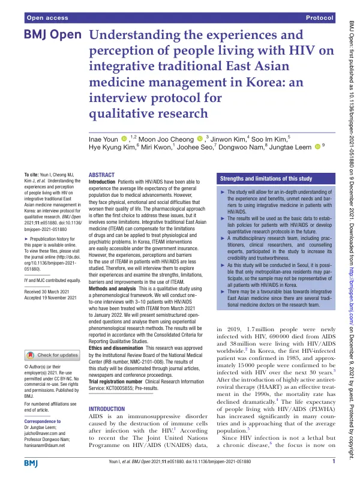

Understanding the experiences and perception of people living with HIV on integrative traditional East Asian medicine management in Korea: an interview protocol for qualitative research
Youn I, Cheong MJ, Kim J, Kim SI, Kim HK, Kwon M, Seo J, Nam D, Leem J
BMJ Open 11(12):e051880

첫 장 · 오픈액세스First page · open access
논문 소개Summary
의학이 나아지면서 HIV 감염인의 기대수명은 일반 인구와 비슷해졌습니다. 그러나 수명이 늘어난 자리에 삶의 질을 떨어뜨리는 신체적·정서적·사회적 어려움이 남았습니다. 약으로 먼저 접근하지만 약에도 한계가 있습니다. 한국에서는 한의 치료가 건강보험 안에 있어 접근성이 높은데도, HIV 감염인이 한의 치료를 어떻게 겪고 어떻게 여기며 무엇이 그것을 막는지는 연구된 적이 없었습니다.
이 논문은 그것을 듣기 위한 질적연구의 프로토콜입니다. 현상학적 틀을 쓰고, 한의 치료를 받아 본 HIV 감염인 3명에서 10명과 일대일 면담을 합니다. 반구조화된 개방형 질문을 쓰고 자료가 포화에 이르면 수집을 멈춥니다. 참여자에게는 면담 1회당 88달러를 지급합니다. 동의를 얻어 녹음하거나 녹화하고, 몸짓과 표정 같은 비언어 표현은 현장기록으로 남깁니다.
묻는 것은 네 갈래입니다. 무엇이 한의 치료를 받게 만들었는가, 받아 보니 어떠했는가, 감염인에게 의료란 무엇인가, 그리고 한의 치료를 고르는 데 무엇이 걸림돌인가입니다. 감염 전과 후에 의료 이용이 어떻게 달라졌는지, 주변에 권할 마음이 있는지도 함께 묻습니다.
분석은 체험적 현상학 방법을 따릅니다. 연구자의 지식과 편견을 괄호에 넣고 전사본을 여러 번 읽은 뒤 의미 단위를 나누고, 그것을 묶어 주제를 만들고, 학술 용어로 옮겨 구조적 기술에 이릅니다. 질적연구 경험이 많은 전문가 두 사람이 방법과 분석을 감독하는데 한 사람은 상담심리 전공으로 감염인을 정기 상담해 온 교수이고 다른 한 사람은 교육학 전공으로 소수자 집단을 상담해 왔습니다. 삼각검증과 독립 연구자의 코딩 검증도 둡니다.
프로토콜이므로 결과는 없습니다. 저자들은 두 가지를 미리 밝혀 두었습니다. 연구가 서울에서 진행되므로 수도권 거주자가 주로 참여해 전국의 감염인을 대표하지 못할 수 있다는 점, 그리고 연구진에 한의사가 있어 한의 치료에 우호적인 쪽으로 기울 수 있다는 점입니다.
As medicine has advanced, people living with HIV have come to expect a lifespan close to that of the general population. What remains, in the years gained, are physical, emotional and social difficulties that erode quality of life. Medication is the first approach, but it too has limits. In Korea, Korean medicine is covered by national insurance and so readily accessible — yet how people living with HIV experience it, how they regard it, and what keeps them from it had never been studied.
This paper is the protocol for a qualitative study to hear exactly that. Working within a phenomenological framework, it will conduct one-to-one interviews with three to ten people living with HIV who have received integrative traditional East Asian medicine. Semi-structured open-ended questions are used and data collection ends at saturation. Participants receive US$88 per interview. With consent, interviews are audio or video recorded, and non-verbal expression such as gesture is kept in field notes.
Four lines of questioning run through it: what motivated them to seek the treatment, what the experience was like, what medical care means to them as patients, and what obstacles stand in the way of choosing it. They are also asked how their use of healthcare changed before and after infection, and whether they would recommend the treatment to others.
Analysis follows an experiential phenomenological method: the researcher's knowledge and prejudice are bracketed, transcripts read repeatedly, meaning units separated and then combined into themes, translated into academic terms and built into a structural description. Two experts with extensive qualitative experience supervise the method and analysis — one a professor of counselling psychology who has regularly counselled people living with HIV, the other a specialist in pedagogy who has counselled minority groups. Triangulation and independent validation of the coding are also built in.
Being a protocol, it reports no results. The authors state two things in advance: that because the study runs in Seoul, participants are likely to come from the capital region and may not represent people living with HIV across Korea; and that the presence of traditional medicine doctors on the research team may bias the work favourably towards the treatment under study.
인용Cite
Youn I, Cheong MJ, Kim J, Kim SI, Kim HK, Kwon M, Seo J, Nam D, Leem J. Understanding the experiences and perception of people living with HIV on integrative traditional East Asian medicine management in Korea: an interview protocol for qualitative research. BMJ Open. 2021;11(12):e051880. doi:10.1136/bmjopen-2021-051880